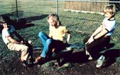

STAFF PHOTO
It's been said that much of the trouble with toys today is the children who use them ... so researcher Dennis Burkholder took no chances when he built this stout little merry-go-round for
his
spirited offspring three years ago.